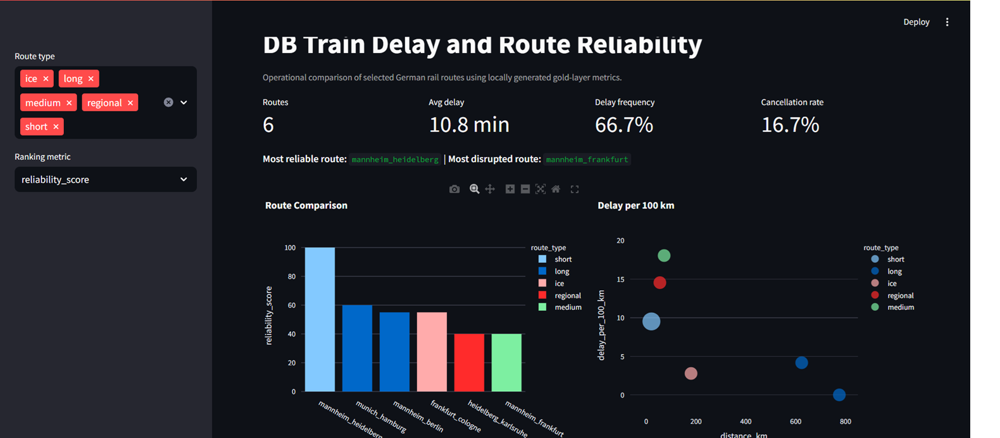

Data Engineering / Analytics & BI
DB Train Delay & Route Reliability
Compare German rail reliability through API ingestion, layered data processing and a Streamlit dashboard.
API → Raw → Bronze → Silver → Gold → dbt
PythonPySparkdbtStreamlit
View details & scope
Local sample pipeline; transport.rest client and dbt tests are implemented. AWS is a target architecture, not a verified deployment. Sample metrics do not establish causes of delays.